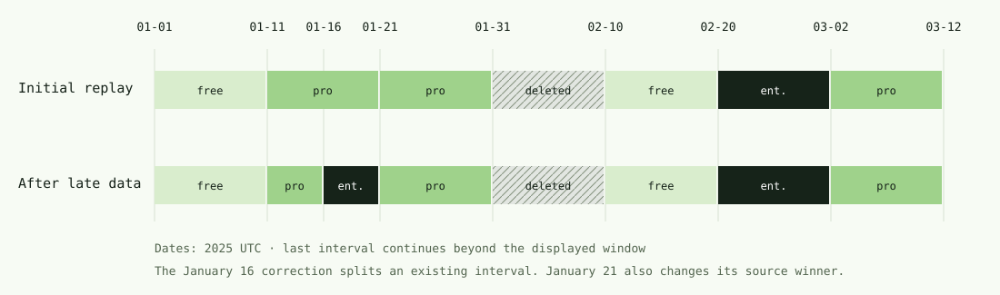
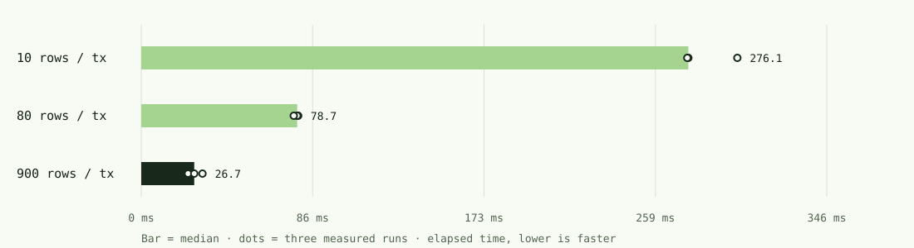

Temporal CDC lab
Rebuild customer validity intervals from out-of-order events, late corrections, duplicates, deletions, and recreations.
80 synthetic customers. The final database matches an independent in-memory reference; 800 point-in-time checks also agree. No external CDC connector or production workload is involved.
Measured with Node v24.20.0 / SQLite 3.53.4 on win32 x64. Inspect the SQLite database · Raw arrival stream
Late-arriving interval corrections
Customer 0001 is first replayed through March 2. A later ingestion batch inserts a January 16 change and two revisions at January 21. The entire entity timeline is rebuilt from accepted events in the same transaction as the inbox insert.

One winner per effective instant
Choose the largest sourceSequence, then the largest ASCII eventId. Both January 21 corrections use sequence 9; customer-0001-20-z wins. The superseded events stay in the inbox.
Half-open validity intervals
[valid_from, valid_to) includes its start and excludes its end. Deletions are explicit tombstone intervals. A null end means the latest accepted version, including a latest deletion.
The band labels show plan; region and winning event ID are available in the before/after JSON. January 21 retains the pro plan but changes region to APAC and its source winner.
Duplicate and conflict handling
The first accepted content for an event ID is immutable. Repeated identical content is ignored. Reused IDs with different valid content are retained in quarantine with both hashes, leaving the accepted timeline unchanged.
| Arrival outcome | Rows | Stored effect |
|---|---|---|
| Accepted unique events | 800 | Inbox rows and rebuilt entity histories |
| Identical duplicates | 100 | No new event or history rebuild |
| Quarantined candidates | 15 | 15 distinct audit rows |
| Quarantine reason | Distinct rows |
|---|---|
| immutable_event_id_conflict | 12 |
| effective_time_requires_canonical_utc | 1 |
| invalid_attribute_value | 1 |
| unexpected_fields | 1 |
Content identity
Validation precedes canonical JSON serialization. Object property order does not create a conflict. SHA-256 records support inspection; exact canonical JSON equality determines duplicate identity.
Conflict-order limitation
Reordering conflicting payloads for the same ID can change which payload is accepted first. Arrival-order invariance is tested for nonconflicting events and identical duplicates only.
Replaying all 915 arrivals: 0 accepted, 900 duplicate attempts, 15 quarantine attempts, 0 rebuilds. Quarantine still contains 15 distinct rows. Inspect audit hashes
Transaction size and rebuild work
Each trial ingests 800 canonical events plus 100 identical duplicates into a fresh file-backed database. Three deterministic orders are reused across batch sizes. Schema initialization is outside the timer; inbox writes, history rebuilds, and commits are inside.

| Rows per transaction | Transactions | Entity rebuilds, median | Elapsed ms, median |
|---|---|---|---|
| 10 | 90 | 763 | 276.1 |
| 80 | 12 | 546 | 78.7 |
| 900 | 1 | 80 | 26.7 |
Larger batches perform fewer commits and coalesce entity rebuilds within each batch. This small local experiment cannot isolate those costs or establish production throughput. Three repetitions describe observed variation; they do not establish statistical significance.
SQLite DELETE journal, synchronous FULL. No explicit cache flushing, no cold-cache claim, no power-loss experiment. All nine raw timings · Primary replay batch trace
Point-in-time customer state
The following results are executed against the saved database for customer-0001. Queries use business effective time. The operational received_at ingestion timestamp does not choose validity boundaries.
| As-of instant (UTC) | State | Plan | Region | Winning event suffix |
|---|---|---|---|---|
| 2024-12-31 00:00 | not yet known | — | — | — |
| 2025-01-11 00:00 | active | pro | NA | 10 |
| 2025-01-16 00:00 | active | enterprise | EU | 15-late |
| 2025-01-21 00:00 | active | pro | APAC | 20-z |
| 2025-01-31 00:00 | deleted | — | — | 30 |
| 2025-02-05 00:00 | deleted | — | — | 30 |
| 2025-02-10 00:00 | active | free | APAC | 40 |
| 2025-03-02 00:00 | active | pro | NA | 60 |
SELECT * FROM customer_history WHERE entity_id = :entity AND valid_from <= :instant AND (valid_to IS NULL OR :instant < valid_to);
Final open intervals: 70 active customers and 10 deleted customers. All history: 90 tombstone intervals. Query output · Inspection queries
Reconciliation and test coverage
Independent checks
- All 640 intervals equal the independent reference.
- 800 as-of queries agree with direct source-event selection.
- 24 input-order and batch-size combinations pass.
- Injected faults roll back inbox, quarantine, and history together.
- SQLite integrity and foreign-key checks pass.
Explicit limits
- One synchronous writer; no network ingestion or source offsets.
- Fixed customer schema, version 1; unknown fields are quarantined.
- Per-entity rebuild cost grows with entity history.
- Effective-time history only; not a bitemporal query engine.
- Replay timings measure this machine and this synthetic dataset.
node --version # Node 24 npm test npm run build:data npm run replay -- --output results-local npm run query -- results-local/store.sqlite customer-0001 2025-01-16T00:00:00.000Z
SEMANTIC HISTORY SHA-256
45730d8e88a571ea72a5341c01c0a563e1706872f3fce324bd5c9ca1a207ef9d
The semantic hash is stable for the accepted event set. The SQLite file hash and measured timings vary because receipt timestamps and machine execution differ. Environment and normalized source hashes · Design and runbook · Screenshots · Review recording